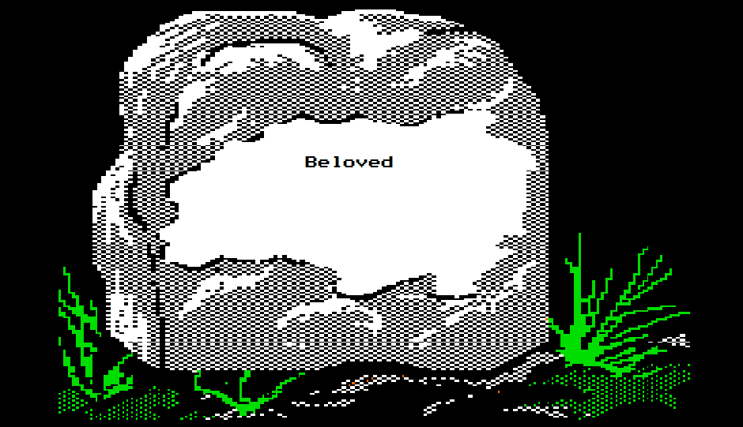

Behind in the Wake of Death
Beloved multigenre project
Dear Reader
Toni Morrison published Beloved in 1987, and told the story of former slaves shortly after the American Civil War. During this time of uncertainty and hardship for former slaves we see the past experiences and lasting troubles that came from a history of slavery.
Throughout the novel, Morrison shows us the views of not only one character but several, centered around Sethe a mother of four, her children, and lover Paul D. The story is centered around the results of a horrible incident many years prior to the books start, when Sethe killed her daughter, known only as Beloved, and how different characters process and react to this occurrence.
Death often acts as a pivotal moment in a person’s life or in a novel - be it a loved one or a foe who dies. As House, M.D. stated “Almost dying changes nothing. Dying changes everything.” Here I explore how exactly people are affected by a death - how they change because of it, and how different cultures treat one’s passing differently.
At some point or another, everybody experiences death, whether it be their own, a family member, a friend, or even a victim. I hope that this project will help accept what has happened and push people to accept the change in their lives. Things shouldn’t go back to normal, because dying changes everything.
Condolences, Praveen Balaji
Music Score (p.s. keep volume low, refresh page)